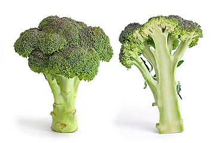
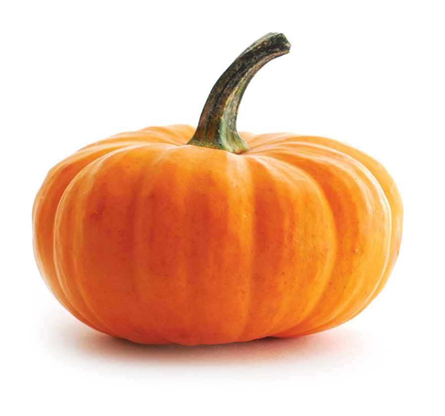

Brokuł
Nasiona brokuła siejemy do pojemników pod koniec lutego. Rozsadę w odległości 40 cm przygotowujemy dopiero w kwietniu. Sadzonki sadzimy w maju. Brokuł należy ustawić w słonecznym stanowisku. Gleba powinna być żyzna, o odczynie pH od 5,5 do 7. Podłoże powinno być stale wilgotne, lecz należy uważać przed nadmierną ilością wody. Można nawozić glebę nawozem z dodatkiem azotu i fosforu. Najczęstsze choroby warzywa to: mączniak rzekomy kapustowanych i jamistość głąba oraz choroby grzybowe są powodowane przez Peronospora parasitica. Po zakwitnieniu brokuła nie należy spożywać.
|  |
|---|
Dynia
Nasiona dyni siejemy po 10 maja wprost do gruntu lub przygotowujemy jej rozsadę. Nie należy wysiewać wcześniej, ponieważ dynia jest wrażliwa na niskie temperatury. Najczęściej umieszcza się nasiona w małych gniazdach, po 2-3 nasiona w głębokości 3-4 cm. Gdy siewki podrosną, pozostawia się najsilniejszą jedną rośline. Gleba powinna być półprzepuszczalna. Należy regularnie spulchniać i odchwaszczać glebę, obficie podlewać. Dynia potrzebuje do wzrostu gleby bogatej w składniki mineralne oraz wodę, a także temperatury od 8 do 25 stopni Celsjusza. Rośliny dyni giną w temperaturze 0 stopni Celsjusza. Dynia jest dobrym przedplonem do innych warzyw.
|  |
|---|